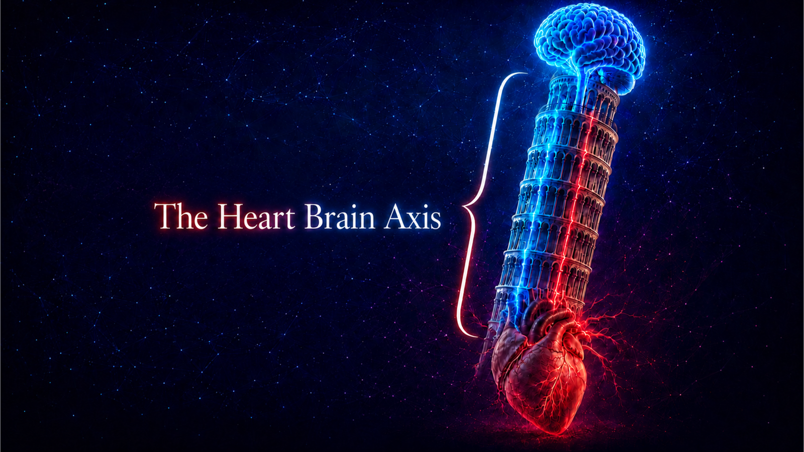

Estimating beat-to-beat RR intervals using EEG features and Gaussian process regression.
EEG → SPoC → GP → RRIllustrative signals
Physiological time seriesPython & MATLABResearch & ML opportunities
01 / Selected research
A question at the brain–heart boundary.
Can useful short-term cardiac dynamics be estimated from EEG signals alone?
Master’s thesis · EEG → RR
Estimating cardiac timing from brain signals
I combined filter-bank Source Power Comodulation with Gaussian process regression to estimate beat-to-beat RR intervals. The evaluation considered subject-specific performance, generalization to unseen individuals, cardiac timing reconstruction, and HRV analysis.
The scientific challenge extends beyond a low prediction error: an estimated sequence must also preserve meaningful variation and avoid accumulating timing drift.
SPoCGaussian processesEEGHRV
02 / Research interests
Questions I want to pursue.
01 / Generalization
Learning across individuals
How can physiological models transfer between people when both signal characteristics and brain–heart relationships vary?
02 / Uncertainty
Knowing when to trust a prediction
How can a model distinguish a reliable cardiac estimate from one made under unfamiliar or ambiguous EEG conditions?
03 / Adaptation
Learning from changing signals
How can a model adapt to physiological changes over time while retaining useful knowledge from earlier recordings?
04 / Dynamics
Preserving the temporal structure
How can predictions preserve cardiac variability and stable timing over successive beats?
03 / About
Working where data meets physiology.

My interests sit at the intersection of machine learning, data science, and physiological signal processing. My master’s research focused on the estimation of cardiac activity from EEG, using interpretable spatial features and probabilistic regression.
PythonMATLABSignal processingMachine learning
04 / Connect
Let’s explore the next question.
I am looking for research opportunities, funded PhD positions, and ML/Data Science roles. Explore my repositories and connect through my GitHub profile.